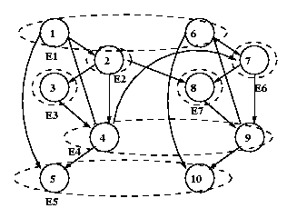

Since nodes 2 and 3 in slice 2 (N7 and N8) have different parents than their counterparts in slice 1 (N2 and N3), they must be put into different equivalence classes. Hence we define
eclass1 = [1 2 3 4 5]; eclass2 = [1 6 7 4 5];The dotted bubbles represent the equivalence classes. Node 7 is the representative node for equivalence class 6, and node 8 is the rep. for class 7, so we need to write
bnet.CPD{6} = xxx_CPD(bnet, 7, xxx);
bnet.CPD{7} = xxx_CPD(bnet, 8, xxx);
In general, you can use the following code fragment:
eclass = bnet.equiv_class(:);
for e=1:max(eclass)
i = bnet.rep_of_eclass(e);
bnet.CPD{e} = xxx_CPD(bnet,i);
end